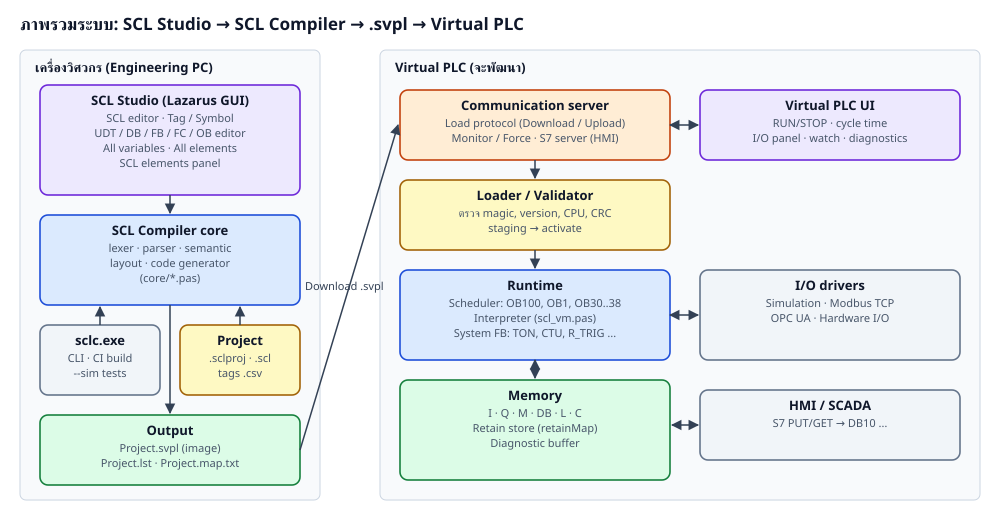

| ส่วน | สถานะ | หมายเหตุ |
|---|---|---|
| Lexer / Parser SCL ครบทุก block | เสร็จ | TYPE, DATA_BLOCK, FUNCTION, FUNCTION_BLOCK, ORGANIZATION_BLOCK |
| Semantic + type checking ตาม CPU | เสร็จ | error พร้อม file(line,col), ไม่หยุดที่ error แรก |
| Memory layout แบบ S7 standard | เสร็จ | DB_HMI 82 byte ตรงกับ HMI map ทุก offset |
| Code generator → bytecode | เสร็จ | 91 opcode, system FB 15 ชนิด |
| ไฟล์ image .svpl + listing + memory map | เสร็จ | reader/writer แยก unit ใช้กับ Virtual PLC ได้ |
| Reference Virtual PLC (interpreter) | เสร็จ (ทดสอบ) | ใช้ทดสอบ compiler; เป็นต้นแบบของ Virtual PLC จริง |
| CLI sclc | เสร็จ | compile, import, dump, sim/test, find-decl |
| IDE SCL Studio | เสร็จ | editor, tag, interface grid, views, find declaration, highlight, elements panel, recent files |
| Virtual PLC + Download | ยังไม่ทำ | ออกแบบไว้ในหัวข้อ 07 |
| รายการ | ค่า |
|---|---|
| ภาษา / เครื่องมือ | Free Pascal 3.2.2, Lazarus 4.x (LCL, SynEdit) |
| จำนวน unit | 17 ไฟล์ (core 12, GUI 4, CLI 1) ประมาณ 15,400 บรรทัด |
| ไฟล์ executable | bin/sclc.exe (~1.9 MB), bin/SCLStudio.exe (~42 MB รวม debug info) |
| ชุดทดสอบ | FluffSilo 65 checks, FeatureTest 44 checks, ErrorTest 10 errors — ผ่านทั้งหมด |
SCLCompiler\ build.bat build ทั้ง CLI และ GUI run_tests.bat compile ตัวอย่าง + รันชุดทดสอบ README.md คู่มือย่อ bin\ sclc.exe, SCLStudio.exe core\ compiler + image format + reference VM (ไม่มี GUI) cli\sclc.lpr command line gui\ SCLStudio.lpi + sclide_*.pas examples\FluffSilo โปรเจกต์จริง S7-1200 + tests\sequence.txt examples\FeatureTest ทดสอบ feature ภาษา (S7-1500) examples\ErrorTest ทดสอบข้อความ error docs\SVPL_Spec.md สเปก image (ฉบับย่อ) docs\handbook\ เอกสารชุดนี้ (.txt .pdf images\)